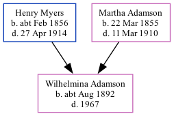

Wilhelmina White Ridley Adamson cAug 1892 - 1967
[ Home ] | [ Calendar ] | [ Surnames Index ] | [ Family History ]The child of Henry Myers (a steamboat man) and Martha AdamsonWilhelmina Myers was born in North Shields, Tyne and Wear, England c. Aug 18921,2,3. On Mar 31, 1901, she lived at Appleby Street, Chirton, Tyne and Wear, England1.
She died in 1967.
Parents
- Henry Briscoe Nicholson was born c. Feb 1856
- Martha Sarah was born on Mar 22, 1855
Citations
- 1901 England, Wales & Scotland Census - Findmypast (was age 8 and the daughter of the head of the household)
- ingdom, England;
- Volume: 10B; Page: 210; Line Number: 109; Record set: England & Wales Births 1837-2006; Subcategory: Civil Births; Category: Birth, Marriage & Death (Parish Registers); Collections from: United Kingdom, England;
Family Tree
Generated by ged2site. Last updated on Nov 13, 2024